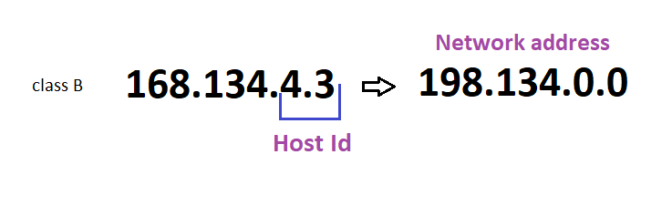
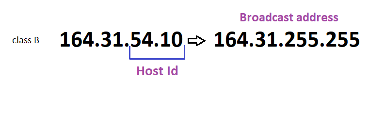
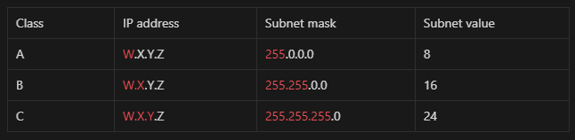

| How classful (IP) addressing works
- If you don’t have a clue about Network Id and Host Id, then check this out: How classful (IP) addressing works
Network address
Network address is first address in the network and it is used for identification network segment.
- Just replace the Host Id with 0 to find the Network address.
For example 168.134.4.3 is class B and its Host Id would be 4.3 - replace it with 0.0 = 168.134.0.0 is the Network address.

Broadcast address
A broadcast address is a network address used to transmit to all devices connected to a multiple-access communications network. A message sent to a broadcast address may be received by all network-attached hosts.
- Just replace the Host Id with 255
For example 164.31.54.10 is class B so its Host Id would be 54.10 - Replace it with 255.255 = 164.31.255.255 is the Broadcast address.

Subnet mask
The subnet mask splits the IP address into the host and network addresses, thereby defining which part of the IP address belongs to the device and which part belongs to the network.

- Source:
ladu.htk.tlu.ee
len.wikipedia.org
avinetworks.com - Wrote: November 22, 2022 | Azar 1, 1401
- Updated:
- Posted: November 22, 2022 | Azar 1, 1401